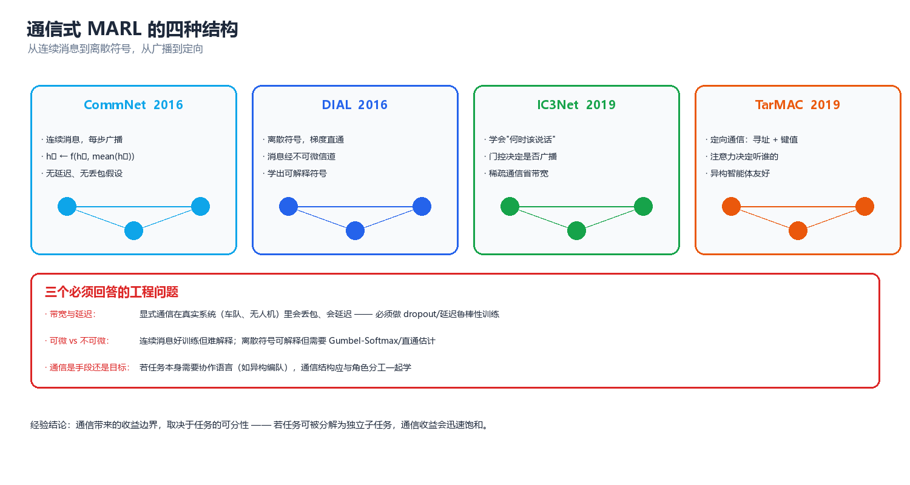
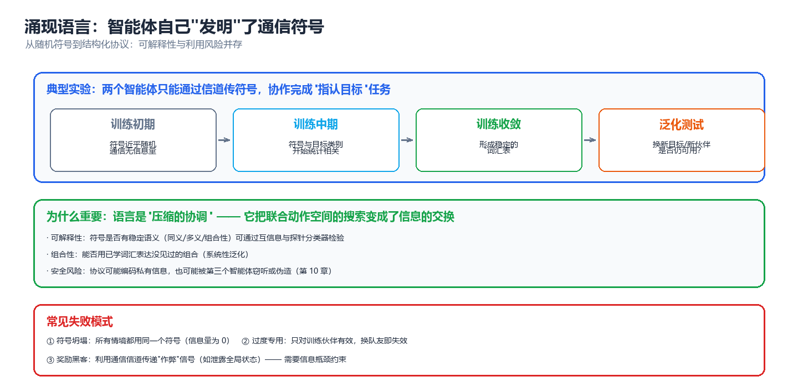
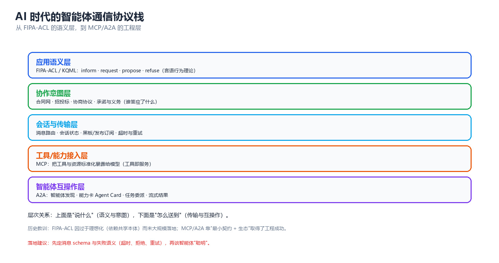

第 06 章 通信与协同
通信是多智能体系统里唯一能"凭空创造信息"的机制 —— 每个智能体只能看见世界的一角，而协作往往需要拼出整张图。本章按"为什么通信（信息论）→ 怎么学通信（通信式 MARL 四大结构）→ 学到了什么（涌现语言与可解释性）→ 通信受限怎么办（带宽/丢包/隐私）→ 工程上怎么落地（FIPA-ACL → MCP/A2A）→ 会怎么坏（失败模式与诊断）"这条主线展开。核心张力是：能通信 ≠ 会通信 ≠ 通信有价值。大量看似"智能"的协作，其实是信道在替智能体做隐式全局状态泄露。
一、为什么需要通信（信息论视角）
1.1 部分可观测下的信息缺失与下界
多智能体的标准设定是 Dec-POMDP（Decentralized Partially Observable Markov Decision Process）：环境有全局状态 \(s \in S\)，每个智能体 \(i\) 只拿到局部观测 \(o_i = O_i(s; \mathbf{a})\)，并据此行动 \(a_i \sim \pi_i(\cdot \mid \tau_i)\)，其中 \(\tau_i = (o_i^1, a_i^1, \dots, o_i^t)\) 是自己的动作-观测历史。
关键事实是：局部观测是有损投影，而投影丢失的信息不会自己回来。设 \(\tau_{\text{joint}} = \{o_1, \dots, o_n\}\) 为当前步全部智能体的观测集合，则"集体能确定多少状态"受条件熵约束：
左边是"只看自己历史"的不确定性，右边是"看全部观测"的不确定性。两者之差
就是智能体 \(i\) 的信息赤字（information deficit）。通信的唯一目标，就是把这 \(\Delta_i\) 用最少的比特填上。若 \(\Delta_i = 0\) 对所有 \(i\) 成立（例如全可观 MMDP），那么通信在信息论上是冗余的 —— 此时加通信只能在优化和探索层面加速，不能突破可达的回报上界。
核心思想：通信不是"锦上添花的能力"，而是对信息赤字的定向偿付。在设计任何通信协议之前，先问一句"谁缺哪一比特？"—— 缺的信息算不出来，能算出来的信息不必传。这句话同时解释了为什么"全广播"几乎总是低效的：它对每个接收者都发同样的东西，而各人的赤字往往是不同的。
更严格地看，Dec-POMDP 的可达回报上界由集中式 POMDP（把 \(\tau_{\text{joint}}\) 当作观测）决定；通信式 MARL 的全部理论价值，就在于用一个有限带宽的信道去逼近这个上界。这一"上界 - 实际"的差距，是衡量任何通信方案好坏的标尺。
| 设定 | 每个智能体可用信息 | 决策质量 | 与上界的差距 |
|---|---|---|---|
| 独立执行（IQL） | 仅自己 \(\tau_i\) | 最差 | 最大（\(\sum_i \Delta_i\) 全部存在） |
| 有限带宽通信 | \(\tau_i\) + 收到的消息 \(m_{j\to i}\) | 中 | 由带宽与协议决定 |
| 无限带宽通信（无约束广播） | 等价于 \(\tau_{\text{joint}}\) | 接近集中式 POMDP | 理论最小 |
| CTDE 集中式 Critic | 训练时看全局，执行时仍用 \(\tau_i\) | 局部执行下的最优 | 受 IGM 约束（见第 05 章） |
⚠️ 注意区分两种"全局信息"：CTDE 只让 Critic 在训练时看全局，执行期每个智能体仍只用 \(\tau_i\)，通信不是必需的（第 05 章会强调这一点，并在非平稳性一节说明其边界）；而通信式 MARL 让信息在执行期也流动，代价是显式的带宽与延迟预算。二者是"训练期特权"与"执行期特权"的分野。若你还不熟悉 MARL 算法家族（IQL / VDN / QMIX / MADDPG / MAPPO / COMA），可先看强化学习第 09 章 §三给出的精简速览，再回到第 05 章读完整正文 —— 本章默认你已理解 CTDE 与值分解的基本前提。
1.2 通信的三种价值（消歧/协调/承诺）
通信的收益并不只有一种来源，把三类价值拆开看，能直接指导协议设计：
| 价值类型 | 要解决的问题 | 典型消息内容 | 若无通信的后果 | 例子 |
|---|---|---|---|---|
| 消歧（disambiguation） | 我的观测有歧义，需要别人补一比特 | "我看到的是左边那个" | 各人对世界的解释不一致，动作冲突 | 两个机器人对同一物体做出相反判断 |
| 协调（coordination） | 我们需要选择同一个均衡，否则都不好 | "我打算去 A 点" | 落入次优均衡（如双方都退让或都抢行） | 会车、交叉路口、无中心任务分配 |
| 承诺（commitment） | 我要让我的行为可信、可预测 | "我保证守住这个位置 3 秒" | 需要实时互相猜测意图，反应迟缓 | 编队飞行、人机协同、合同网投标 |
三者的信息论性质不同：
- 消歧是纯信息传递：消息直接降低接收者的 \(H(S \mid \cdot)\)，价值可以用互信息 \(I(M; S)\) 量化。
- 协调是均衡选择：消息本身不携带关于 \(S\) 的新信息，它只是一个相关信号（correlated signal），用来让双方落到同一个均衡上。这在第 03 章的"相关均衡"里出现过 —— 一个公开随机信号可以严格改进纳什回报，即使它不带任何环境信息。
- 承诺是改变他人的收益结构：它把"可能反悔"的博弈变成"反悔有成本"的博弈，本质上是把第 04 章的机制设计思想搬进了实时通信里。
核心思想：如果你发现"加了通信但没效果"，先判断你要的是哪一类价值。消歧类问题往往是消息内容没编码对；协调类问题往往不是信息不够而是没有共同随机性（可以加一个廉价公共信号）；承诺类问题则是激励问题，光传信息不解决。
1.3 通信不是免费的（带宽、延迟、丢包）
真实信道有三个硬约束，它们决定了通信式 MARL 的可部署性：
| 约束 | 物理来源 | 数学建模 | 训练时的处理方式 |
|---|---|---|---|
| 带宽（bandwidth） | 信道容量有限 | 消息维度 \(d_m\) 固定 / 比特预算 \(B\) | 固定消息维度、向量量化、信息瓶颈正则 |
| 延迟（latency） | 传播与处理时间 | 消息延迟 \(k\) 步：收到 \(m^{t-k}\) | 训练时注入随机延迟、用记忆补偿 |
| 丢包（packet loss） | 链路不可靠 | 消息以概率 \(p\) 被丢弃 | 训练时随机 drop、重传、冗余编码 |
香农信道容量给出了硬上界：在信噪比 \(\mathrm{SNR}\) 下，可无差错传输的速率不超过
再叠加丢包，有效吞吐还要乘上成功概率。这个上界很重要，因为它告诉我们："消息发得越长越好"是错的 —— 超过 \(C\) 的部分只会增加噪声与过拟合。
延迟的影响常被低估。设消息延迟为 \(k\) 步，则接收者在 \(t\) 时刻拿到的是 \(t-k\) 时刻的旧信息，其"过期程度"可以用与当前状态的条件互信息衡量：
即消息携带的当前信息不会超过它生成时携带的信息（数据处理不等式）。环境变化越快（如高速运动、高频交易），\(k\) 步延迟的代价越大。
⚠️ 一个反直觉的工程结论：在实时控制回路里，"少发、准发、早发"通常优于"多发、全发、慢发"。带宽宽松时仍有必要做门控（IC3Net 的动机），因为多发会挤占决策时延预算。这与 LLM 多智能体系统里"上下文越长越慢、越贵、越容易幻觉"的经验完全同构（见第 08 章）。
二、通信式 MARL 的四种结构（含架构图）

图：CommNet（全广播）→ DIAL（离散符号）→ IC3Net（门控）→ TarMAC（定向寻址），从"人人都说"到"只说给该听的人"。
四种结构的演进逻辑是一条清晰的线：从无约束广播，走向有选择的、可训练的、可解释的定向通信。下面逐一拆解。
2.1 CommNet 连续广播
CommNet（Communication Neural Net, Sukhbaatar et al., 2016）是最简洁的通信式 MARL 骨架：每个智能体维护一个隐藏状态 \(h_i^t\)，在每一步先广播自己的隐藏状态（编码成消息），再聚合所有人的消息，然后更新。
其中 \(f\) 通常是 GRU/MLP，\(g\) 是消息编码器。执行 \(K\) 轮"通信-更新"后，每个智能体从 \(h_i\) 输出动作。\(K\) 是通信跳数：\(K=1\) 只能交换一阶信息，\(K=2\) 就能让信息跨越两跳传播（A 的信息经 B 到达 C）。
通信第 1 跳 通信第 2 跳
智能体1 智能体2 智能体3 智能体1 智能体2 智能体3
┌───┐ ┌───┐ ┌───┐ ┌───┐ ┌───┐ ┌───┐
│编码│ │编码│ │编码│ │编码│ │编码│ │编码│
└─┬─┘ └─┬─┘ └─┬─┘ └─┬─┘ └─┬─┘ └─┬─┘
│m1 │m2 │m3 │m1' │m2' │m3'
├────────┼────────┤ 全连接广播 ├────────┼────────┤
▼ ▼ ▼ ▼ ▼ ▼
┌──────────────────────┐ ┌──────────────────────┐
│ 均值聚合 → 更新 h_i │ ──► │ 均值聚合 → 更新 h_i │
└──────────┬───────────┘ └──────────┬───────────┘
│ │
▼ ▼
动作 a_i^t 动作 a_i^{t+K}
| 属性 | CommNet 设定 | 含义 |
|---|---|---|
| 通信对象 | 全体（除自己） | 无寻址，O(n²) 消息量 |
| 消息类型 | 连续向量 | 可微，端到端可训练 |
| 通信轮数 | 固定 \(K\) | 控制信息传播半径 |
| 聚合函数 | 均值（也可换最大/注意力） | 置换不变，天然处理乱序 |
| 可解释性 | 低 | 连续向量难解读 |
优点：结构简单、端到端可训练、对智能体数量有置换不变性。缺点：① 无门控——即使不需要通信也照样发，浪费带宽；② 无寻址——想说给特定人听做不到；③ 均值聚合把所有人的信息"糊"在一起，无法区分信源重要性（后续 TarMAC 正是为修这一点）。
2.2 DIAL 离散符号 + 直通估计（Gumbel-Softmax 说明）
DIAL（Differentiable Inter-Agent Learning, Foerster et al., 2016）的关键创新是：强制消息走离散符号，从而更接近真实通信（有限比特、可枚举、可能可解释），同时解决"离散采样不可微"的难题。
问题在于：如果消息 \(m\) 是从 \(\mathrm{Categorical}\) 分布里采样得到的离散符号，那么 \(\partial \mathcal{L} / \partial \theta_{\text{sender}}\) 会被采样操作切断（采样不可导）。DIAL 的解法是 Categorical Reparameterization / Gumbel-Softmax（Jang et al., 2017；Maddison et al., 2017）：
其中 \(g\) 是 Gumbel 噪声，\(\tau\) 是温度。性质非常漂亮：
- \(\tau \to 0\) 时，\(z\) 趋向 one-hot（纯离散采样），期望等于 Categorical 概率。
- \(\tau > 0\) 时，\(z\) 是光滑近似，梯度可以顺畅回流到发送方。
- 训练时用中等 \(\tau\)，推理时用 \(\tau \to 0\)（或在离散前向、软后向之间用 Straight-Through：前向传 one-hot，反向传 softmax 梯度）。
DIAL 进一步让接收方在训练时看到软消息（可导），在执行时收到硬离散符号，这被称为"消息作为可微通信与真实通信的桥"。
发送方 logits π ──► Gumbel-Softmax(τ) ──► 软消息 z (可微) ──► 训练用
│
τ→0 / 直通估计(Gumbel argmax)
▼
硬符号 m ∈ {1..K} ──► 执行用
# Gumbel-Softmax 采样: 展示 τ 如何控制"离散程度"
import numpy as np
def gumbel_softmax(logits, tau, rng):
"""从 logits 采样松弛 one-hot (numpy 实现, 对应 PyTorch 的 F.gumbel_softmax)."""
u = rng.random(logits.shape) # 均匀噪声
g = -np.log(-np.log(u + 1e-12)) # Gumbel 噪声
z = (logits + g) / tau # 加噪 + 降温
z = z - z.max(axis=-1, keepdims=True) # 数值稳定
e = np.exp(z)
return e / e.sum(axis=-1, keepdims=True)
logits = np.array([2.0, 1.0, 0.1]) # 偏好第 0 类
for tau in (1.0, 0.5, 0.1):
rng = np.random.default_rng(42) # 固定噪声, 只变化 τ, 便于对比
z = gumbel_softmax(logits, tau, rng)
print(f"τ={tau:.1f} 软采样分布 = {np.round(z, 3)} argmax={z.argmax()}")
print("τ 越小越接近 one-hot; τ→0 退化为硬采样")
# 预期输出:
# τ=1.0 软采样分布 = [0.732 0.084 0.184] argmax=0
# τ=0.5 软采样分布 = [0.929 0.012 0.059] argmax=0
# τ=0.1 软采样分布 = [1. 0. 0.] argmax=0
# τ 越小越接近 one-hot; τ→0 退化为硬采样
| 属性 | DIAL 设定 | 含义 |
|---|---|---|
| 通信对象 | 指定接收者（可寻址） | 支持点对点，消息量可控 |
| 消息类型 | 离散符号（\(K\) 类） | 有限比特、可枚举 |
| 梯度通路 | Gumbel-Softmax / 直通估计 | 离散采样可训练 |
| 训练/执行差异 | 训练用软、执行用硬 | 需要温度退火 |
| 可解释性 | 中 | 符号可统计，但语义仍需探测 |
⚠️ 常见坑：\(\tau\) 退火太快会让梯度方差爆炸、训练不稳；太慢则始终是"软消息"，执行时切到硬符号会出现训练-执行不一致（train-test mismatch）。工程上建议 \(\tau\) 从 1.0 缓慢降到 0.1，并在最后阶段评估硬符号下的真实性能。
2.3 IC3Net 门控
IC3Net（Individualized Controlled Continuous Communication Net, Singh et al., 2019）问了 CommNet 没问的问题："我现在该不该说话？" 它给每个智能体加一个门控变量 \(g_i^t \in \{0,1\}\)，由策略自己学出来：
门关时，该智能体既不发送也不接收，成为一个"沉默的观察者"。IC3Net 用两类奖励训练门控：
- 环境奖励（任务本身）
- 通信成本惩罚 \(-\lambda \sum_i g_i^t\)：让系统学会"能不通信就不通信"
结果很直观：在需要协作的场景（捕食者-猎物 Predator-Prey）门控打开、通信活跃；在竞争场景（需要隐藏意图，如猎物的逃跑）门控几乎关闭——因为说话会泄露自己的位置。这说明门控不仅省带宽，还学会了"信息不该共享"的边界。
| 门控状态 | 发送 | 接收 | 语义 |
|---|---|---|---|
| \(g_i = 1\) | 是 | 是 | 主动参与通信 |
| \(g_i = 0\) | 否 | 否 | 沉默，独立行动 |
| 混合（软 \(g_i\)） | 加权发送 | 加权接收 | 训练期连续松弛 |
与竞争场景对照：在部分可观测的对抗里，最优策略常常是"少说"。这与人类谈判里的沉默策略同构 —— 信息不是越多越好，在对手也是决策者时，发送信息 = 泄露信息。这一点在第 08 章的 LLM 多智能体（把自然语言当作通信协议）里会以"上下文泄露导致策略被对手利用"的形式再次出现。
2.4 TarMAC 定向寻址（注意力选听）
CommNet 的均值聚合是"听所有人的平均意见"；TarMAC（Targeted Multi-Agent Communication, Das et al., 2019）改成"听我该听的人"，用注意力机制做定向寻址与选听。
每个智能体同时扮演发送方与接收方：
发送方在自己消息里内嵌一个 key，接收方用自己的 query 去匹配所有人的 key：
于是 \(\alpha_{ij}\) 直接给出了"智能体 \(i\) 有多在意 \(j\) 的话"，这是一个天然可解释的通信图。
发送方 1 key_1 ──┐
发送方 2 key_2 ──┼──► 与 query_i 点积 ──► softmax ──► α_i1, α_i2, α_i3
发送方 3 key_3 ──┘ │
▼
接收方 i: query_i ───────────────────────────────────► c_i = Σ_j α_ij · value_j
│
▼
融合: h_i ← f(h_i, c_i) → 动作
| 属性 | TarMAC 设定 | 含义 |
|---|---|---|
| 通信对象 | 注意力加权选择 | 隐式寻址，可事后分析 |
| 消息类型 | 连续向量 + 内嵌 key | key 决定"被谁听见" |
| 聚合函数 | 注意力加权求和 | 区分信源重要性 |
| 可解释性 | 高（\(\alpha_{ij}\) 可视化） | 能画出通信拓扑 |
| 计算复杂度 | \(O(n^2 d)\) | 智能体数大时开销显著 |
核心思想：注意力权重 \(\alpha_{ij}\) 不只是计算技巧，它是通信拓扑本身 —— 模型学出来的"谁听谁"就是一张动态组织的图。在装配、协同搬运等任务里，可视化 \(\alpha\) 常能解释"为什么这组智能体收敛快"：它们自发形成了分工子群（对应第 07 章的组织理论）。
2.5 对比表
| 维度 | CommNet (2016) | DIAL (2016) | IC3Net (2019) | TarMAC (2019) |
|---|---|---|---|---|
| 消息类型 | 连续向量 | 离散符号 | 连续（门控后） | 连续 + key |
| 通信对象 | 全体广播 | 可指定 | 全体广播（可静默） | 注意力选听 |
| 是否可寻址 | 否 | 是 | 否 | 隐式（注意力） |
| 是否门控 | 否 | 否 | 是 | 否（权重即软门控） |
| 梯度通路 | 天然可微 | Gumbel-Softmax / 直通 | 软伯努利松弛 | 天然可微 |
| 通信成本意识 | 无 | 无 | 有（λ 惩罚） | 隐式（权重稀疏） |
| 可解释性 | 低 | 中 | 中 | 高 |
| 消息量复杂度 | \(O(n^2)\) | \(O(n)\)（点对点） | \(O(n^2)\)（但可静默） | \(O(n^2)\) |
| 典型适用 | 小规模对称协作 | 需要离散协议 | 协作+竞争混合 | 异构、需要组织 |
| 主要短板 | 无选择、无寻址 | 训练不稳 | 门控坍缩风险 | 大 \(n\) 时开销大 |
选型建议：小规模、同质、快速验证 → CommNet；需要可枚举协议、要离散符号 → DIAL；协作与竞争混合、带宽敏感 → IC3Net；异构、需要理解"谁听谁" → TarMAC。真实系统常常叠加：门控 + 注意力 + 离散量化。
2.6 实跑一个最小可微通信信道
上面的理论听起来抽象，我们用纯 numpy + 手动梯度实现一个两智能体协作任务，直接量化"有通信 vs 无通信"的性能差。任务设定：
- 全局目标 \(t = [t_0, t_1] \sim \mathcal{N}(0, I)\)。
- 智能体 1 只观测到 \(t_0\)，智能体 2 只观测到 \(t_1\)（各自缺一维）。
- 每个智能体要预测完整的 \(t\)，两人损失取平均。
- 消息维度 \(H=8\)，用 \(\tanh\) 生成消息并投递。无通信时接收端拿到全零向量（切断消息路径）。
理论预期：无通信时，每个智能体只能预测缺失那一维的均值 0，误差贡献为方差 1，平均损失约 0.5（因为已知的那一维误差为 0）；有通信时，缺失信息被补上，损失应趋近 0。
# 最小可微通信信道: 两智能体协作补全任务 + 手动梯度 (仅 numpy)
import numpy as np
rng = np.random.default_rng(0)
H = 8 # 隐藏层 / 消息维度
def make_batch(n=256):
"""目标 t=[t0,t1]; 智能体1只看 t0, 智能体2只看 t1 (部分可观测)."""
t = rng.normal(0.0, 1.0, size=(n, 2))
x1 = np.stack([t[:, 0], np.zeros(n)], axis=1) # 智能体1观测
x2 = np.stack([np.zeros(n), t[:, 1]], axis=1) # 智能体2观测
return x1, x2, t
def init_params():
return {
"Wa": rng.normal(0, 0.3, (H, 2)), # 观测编码
"ba": np.zeros(H),
"Wc": rng.normal(0, 0.3, (H, H)), # 消息生成
"bc": np.zeros(H),
"Wo": rng.normal(0, 0.1, (2, 2 + H)), # 解码: [观测; 收到的消息] -> 预测
"bo": np.zeros(2),
}
def train(comm=True, steps=800, lr=0.05):
p = init_params()
for _ in range(steps):
x1, x2, t = make_batch()
n = x1.shape[0]
# ---- 前向: 各自编码观测并生成消息 ----
h1 = np.tanh(x1 @ p["Wa"].T + p["ba"]); m1 = np.tanh(h1 @ p["Wc"].T + p["bc"])
h2 = np.tanh(x2 @ p["Wa"].T + p["ba"]); m2 = np.tanh(h2 @ p["Wc"].T + p["bc"])
recv1 = m2 if comm else np.zeros((n, H)) # 智能体1 收到 智能体2 的消息
recv2 = m1 if comm else np.zeros((n, H)) # 智能体2 收到 智能体1 的消息
u1 = np.concatenate([x1, recv1], axis=1); y1 = u1 @ p["Wo"].T + p["bo"]
u2 = np.concatenate([x2, recv2], axis=1); y2 = u2 @ p["Wo"].T + p["bo"]
loss = (np.mean((y1 - t) ** 2) + np.mean((y2 - t) ** 2)) / 2
# ---- 手动反向传播 ----
dy1 = (y1 - t) / n; dy2 = (y2 - t) / n # dL/dy (含 /2 系数)
g = {}
g["Wo"] = dy1.T @ u1 + dy2.T @ u2
g["bo"] = dy1.sum(0) + dy2.sum(0)
du1 = dy1 @ p["Wo"]; du2 = dy2 @ p["Wo"]
dm1 = du2[:, 2:]; dm2 = du1[:, 2:] # 发消息者的梯度
g["Wa"] = np.zeros_like(p["Wa"]); g["ba"] = np.zeros(H)
g["Wc"] = np.zeros_like(p["Wc"]); g["bc"] = np.zeros(H)
for x, h, m, dm in ((x1, h1, m1, dm1), (x2, h2, m2, dm2)):
if not comm:
dm = np.zeros_like(dm) # 无通信: 切断消息路径
dz = dm * (1 - m ** 2) # 过 tanh
g["Wc"] += dz.T @ h; g["bc"] += dz.sum(0)
dh = (dz @ p["Wc"]) * (1 - h ** 2)
g["Wa"] += dh.T @ x; g["ba"] += dh.sum(0)
for k in g:
p[k] -= lr * g[k]
return loss
for comm in (False, True):
loss = train(comm=comm)
print(f"通信={'开' if comm else '关'} 最终训练损失 = {loss:.4f}")
print("理论下界(无通信时每个智能体已知自己那一维) ≈ 0.5000")
# 预期输出:
# 通信=关 最终训练损失 = 0.5159
# 通信=开 最终训练损失 = 0.0053
# 理论下界(无通信时每个智能体已知自己那一维) ≈ 0.5000
结果解读：
| 设定 | 最终损失 | 与理论下界比较 | 说明 |
|---|---|---|---|
| 通信=关 | 0.5159 | ≈ 0.5（下界） | 每个智能体只能填 2 维中的 1 维，缺失维贡献约 0.5 |
| 通信=开 | 0.0053 | 接近 0 | 消息把缺失维度补上，损失降两个数量级 |
这个实验揭示的核心事实：通信的收益是可测量的、有上界的。它把损失从 0.5 降到 0.005 —— 恰好对应"填补 \(\Delta_i\) 信息赤字"的信息论预期。更重要的是，注意反向传播里 if not comm 那三行：通信是梯度图上的一条显式路径，切断它就等于切断信息流。所有通信式 MARL 的本质，都是在这条路径上做设计：发什么（编码）、给谁（寻址）、何时发（门控）、发多少（带宽）。
三、涌现语言与可解释性

图：从消息到语义 —— 互信息衡量"说了什么"，探针分类器揭露"藏了什么"，组合性检验判断能否"举一反三"。
3.1 符号语义的度量（互信息、探针分类器、组合性）
当两个智能体自学出一套消息协议后，第一个问题必然是：这些符号是什么意思？ 有三种互补的度量手段。
(1) 互信息 \(I(M; S)\)：消息 \(M\) 与状态 \(S\) 之间的互信息，衡量"消息携带了多少关于状态的信息"：
\(I(M;S)=0\) 意味着消息与状态无关（符号坍塌或噪声）；\(I(M;S)=H(S)\) 意味着消息完美编码状态。
(2) 探针分类器（probe classifier）：用一个独立的小分类器（如逻辑回归）从消息 \(m\) 里预测某个目标属性（如"伙伴在哪里"）。若探针准确率高，说明该属性线性可读地编码在消息里。它是互信息的"有向、可操作"版本——不仅问"有多相关"，还问"相关的是哪个属性"。
(3) 组合性（compositionality）：检验"新符号 = 旧符号的组合"。理想协议下，若符号 \(A\) 表示"红色"、\(B\) 表示"圆形"，则组合应对应"红色圆形"，系统能外推到未见组合。组合性强的协议迁移性好，弱的协议每个概念学一个新符号（词典爆炸）。
下面实跑互信息计算，对比三种协议的"语义含量"：
# 消息-状态互信息 I(M;S): 用离散联合分布计算, 度量符号语义
import numpy as np
from collections import Counter
def mutual_information(pairs):
"""pairs: [(state, message), ...] -> I(M;S), 单位 bit."""
n = len(pairs)
ps = Counter(s for s, _ in pairs) # 状态边缘
pm = Counter(m for _, m in pairs) # 消息边缘
psm = Counter(pairs) # 联合
mi = 0.0
for (s, m), c in psm.items():
p_sm = c / n
mi += p_sm * np.log2(p_sm / ((ps[s] / n) * (pm[m] / n)))
return mi
rng = np.random.default_rng(1)
N = 4000
# 协议A: 消息忠实编码状态 (每个状态映射到唯一符号)
states = rng.integers(0, 4, N)
msgA = states.copy()
# 协议B: 符号坍塌, 所有人都发同一个符号
msgB = np.zeros(N, dtype=int)
# 协议C: 半随机 (一半忠实, 一半乱发)
msgC = np.where(rng.random(N) < 0.5, states, rng.integers(0, 4, N))
print(f"H(S) = {mutual_information(list(zip(states, states))):.4f} bit (自信息上界, 采样近似)")
print(f"I(M;S) 协议A 忠实编码 = {mutual_information(list(zip(states, msgA))):.4f} bit")
print(f"I(M;S) 协议B 符号坍塌 = {mutual_information(list(zip(states, msgB))):.4f} bit")
print(f"I(M;S) 协议C 半有效 = {mutual_information(list(zip(states, msgC))):.4f} bit")
# 预期输出:
# H(S) = 1.9994 bit (自信息上界, 采样近似)
# I(M;S) 协议A 忠实编码 = 1.9994 bit
# I(M;S) 协议B 符号坍塌 = 0.0000 bit
# I(M;S) 协议C 半有效 = 0.4390 bit
结果解读：状态有 4 种取值，理论上界 \(H(S)=2\) bit（采样近似 1.9994）。三种协议：
| 协议 | \(I(M;S)\) | 语义含量 | 诊断 |
|---|---|---|---|
| A 忠实编码 | 1.9994 bit | 满 | 每个状态对应唯一符号，协议有效 |
| B 符号坍塌 | 0.0000 bit | 零 | 所有消息相同，信道空转 |
| C 半有效 | 0.4390 bit | 低 | 一半消息是噪声，语义被稀释 |
⚠️ 关键陷阱：互信息高不等于"人类可读"。一个协议可以有完美的 \(I(M;S)\)，但符号与概念之间是任意映射（如把"红"编码为 7、"蓝"编码为 3），可解释性仍然是零。互信息衡量的是协议的信息有效性，不是语义的可理解性 —— 后者要靠探针分类器对准具体属性。
3.2 符号坍塌与过拟合伙伴
符号坍塌（symbol collapse） 是通信式 MARL 最经典的病理：所有智能体退化为发送同一个符号（或极少数符号），信道虽在但无信息。原因通常是：
| 成因 | 机理 | 表现 |
|---|---|---|
| 梯度坍缩 | 消息对损失的贡献被均值聚合稀释 | 消息梯度趋 0，编码器不再更新 |
| 通信冗余 | 环境信息已可从自身观测推断 | 消息对决策边际价值≈0 |
| 过早收敛 | 探索不足，大家都"抄近路" | 直接学成"沉默也够用" |
| 惩罚过强 | 通信成本 \(\lambda\) 过大 | 门控永久关闭 |
过拟合伙伴（overfitting to partner） 是另一个近亲：协议在一个特定伙伴上学得很好，但换了伙伴就失效——因为符号语义是双方共同约定出来的，不存在客观依据。两个独立训练的智能体即使各自协议"内部自洽"，凑到一起也常常鸡同鸭讲。这正是"协议不可迁移"问题的根源。
| 现象 | 症状 | 与"可解释性"的关系 |
|---|---|---|
| 符号坍塌 | 消息熵 \(\to 0\) | 完全不可解释（没有内容） |
| 过拟合伙伴 | 换伙伴性能骤降 | 可解释但不通用 |
| 词典爆炸 | 消息种类随任务指数增长 | 组合性缺失 |
3.3 泛化到新伙伴（zero-shot coordination）
零样本协调（Zero-Shot Coordination, ZSC） 问的是：能否训练出一个策略，使得它能与从未见过的伙伴合作良好？这在 LLM 多智能体的语境里尤其重要——你的智能体要和未知的第三方（其他公司的智能体）协作，不能假设双方共同学过协议。
代表性解法：
| 方法 | 核心思想 | 对通信的处理 |
|---|---|---|
| Other-Play（Hu et al., 2020） | 对伙伴的"任意对称性"做不变性 | 协议必须对伙伴重命名不变 |
| Population-Based Training | 与多样化种群竞争/合作 | 逼出鲁棒协议 |
| MEP / 最大化熵种群训练 | 最大化种群行为多样性 | 协议需在多样伙伴上都可读 |
| 共享约定训练 | 提供公共随机种子/惯例 | 用公共信号锚定符号语义 |
| 自然语言作为协议 | 直接用人类语言 | 见第 08 章 LLM 多智能体 |
核心思想：协议是"约定"（convention），而非"真理"。两个智能体能通信，往往不是因为发现了一个客观编码，而是因为它们碰巧收敛到同一个约定（Coleman 的约定理论、Lewis 的《Convention》早有论述）。要让协议可迁移，必须在训练时主动注入多样性，或用人类既有的协议（自然语言）来锚定符号 —— 这正是 LLM 多智能体把自然语言当作通信协议的根本动机（第 08 章）。
四、通信受限与鲁棒性
4.1 带宽预算与信息瓶颈
现实系统不会给你无限带宽。信息瓶颈（Information Bottleneck, IB） 提供了把"消息既要够用、又要够省"这件事写成目标函数的框架。基本形式是：在最大化消息对任务的有用性的同时，最小化消息对输入的信息量：
其中 \(\beta\) 是权衡系数。直观理解：让消息只保留"与任务相关"的部分，丢弃无关细节。这在通信式 MARL 里的直接落地就是给消息加惩罚项：
| 惩罚方式 | 目标 | 效果 |
|---|---|---|
| 消息维度硬约束 | 强制 \(d_m\) 小 | 最直接，但要手工调 \(d_m\) |
| \(L_1\) / \(L_2\) 正则 | 让消息稀疏/小 | 简单，但未必对应信息量 |
| 熵惩罚 | 降低消息熵 \(H(M)\) | 抑制符号坍塌的反面（过度稀疏） |
| 互信息上界 | 直接压 \(I(M;\tau_i)\) | 理论干净，估计方差大（MINE 等） |
| 向量量化（VQ-VAE） | 消息落入有限码本 | 离散化 + 压缩一体 |
⚠️ 信息瓶颈的大 \(\beta\) 陷阱：\(\beta\) 太大时，系统会学到"什么也不说"（消息退化为常量，\(I(M;S)\to 0\)）。这就是 §3.2 符号坍塌的信息论解释。带宽不是越省越好，最优 \(\beta\) 是让"任务损失"和"带宽成本"的边际相等。
4.2 丢包/延迟鲁棒训练（实跑）
真实链路会丢包。两种应对策略：
- 训练时注入扰动：在训练阶段以概率 \(p\) 随机丢弃消息，让策略学会在"某些消息缺失"时依然能行动（域随机化的通信版）。
- 冗余与重传：发送方重复/编码冗余，或用 \(n\) 轮通信提高送达概率。
下面实跑蒙特卡洛实验，量化丢包率 → 通信失败率的关系，并展示多轮重传如何把失败率压下去。任务简化设定：智能体需要拿到对方的一比特信息，每轮独立以 \(1-p\) 概率送达；若连续 \(n\) 轮全部失败，则退化为"猜均值"（损失记为 1）。
# 丢包鲁棒性: 蒙特卡洛估计不同丢包率下的协作性能 (仅 numpy)
import numpy as np
rng = np.random.default_rng(7)
n_rounds = 3 # 允许重传的消息轮数
N = 200000 # 蒙特卡洛样本数
def expected_loss(drop):
"""任务: 智能体需获得对方的坐标(方差1). 每轮以 1-drop 概率送达;
全部失败时退化为预测均值(贡献 1.0 的误差), 成功时误差为 0."""
fail = rng.random((N, n_rounds)) < drop # 每轮是否丢包
all_fail = fail.all(axis=1) # n_rounds 轮全丢
return all_fail.mean()
print("丢包率 单轮 三轮重传后失败率 期望损失")
for drop in (0.0, 0.1, 0.3, 0.5, 0.7, 0.9):
one = drop
multi = expected_loss(drop)
print(f"{drop:5.2f} {one:5.2f} {multi:6.4f} {multi:6.4f}")
print("-" * 44)
print("结论: 0.5 丢包率下, 三轮重传把失败率从 0.5 压到 ~0.125")
# 预期输出:
# 丢包率 单轮 三轮重传后失败率 期望损失
# 0.00 0.00 0.0000 0.0000
# 0.10 0.10 0.0009 0.0009
# 0.30 0.30 0.0270 0.0270
# 0.50 0.50 0.1243 0.1243
# 0.70 0.70 0.3425 0.3425
# 0.90 0.90 0.7310 0.7310
# --------------------------------------------
# 结论: 0.5 丢包率下, 三轮重传把失败率从 0.5 压到 ~0.125
结果解读：失败率 \(= p^{n}\)（每轮独立丢掉）：
| 丢包率 \(p\) | 单轮失败 | 3 轮重传失败 (\(p^3\)) | 改善倍数 |
|---|---|---|---|
| 0.1 | 0.10 | 0.0009 | ~111× |
| 0.3 | 0.30 | 0.0270 | ~11× |
| 0.5 | 0.50 | 0.1243 | ~4× |
| 0.7 | 0.70 | 0.3425 | ~2× |
| 0.9 | 0.90 | 0.7310 | ~1.2× |
核心思想：重传对低丢包率极其有效，对高丢包率近乎无效。当 \(p=0.9\) 时，3 轮重传仍失败 73% —— 这时该换策略（换信道/加前向纠错/让策略学会无通信也能活），而不是继续重传。这也解释了为什么"训练时注入丢包"比"无限重传"更鲁棒：让策略学会在信息缺失下行动，而不是假设信息一定到位。
延迟的处理与丢包类似但更微妙：延迟造成的是过期信息，而非缺失。常用做法是给消息打时间戳，让接收者用记忆（GRU/LSTM/Transformer）区分新旧，并在训练时注入随机延迟（如 uniform \(\{0,1,2\}\) 步），逼出"能容忍旧消息"的策略。
| 扰动类型 | 注入方式 | 策略学到什么 |
|---|---|---|
| 丢包 | 随机置零消息 | 无信息时的保底行为 |
| 延迟 | 用旧消息替换 | 用记忆融合新旧信息 |
| 噪声 | 消息加高斯噪声 | 对量化误差鲁棒 |
| 带宽限制 | 截断/量化消息 | 在少数比特下传递关键信息 |
4.3 通信与隐私（谁该知道什么）
通信不只关乎效率，还关乎安全与隐私。三个必须显式设计的问题：
(1) 谁该知道什么（最小权限）：消息应当遵循最小必要原则 —— 只传对方完成任务所需的、最小粒度的信息。例如路径规划中，只需传"我要走哪条路"，不必传"我的全部位置历史"。
(2) 信道作为信息泄露渠道：在对抗场景里，广播 = 向对手公开情报。IC3Net 的竞争场景实验已经说明，最优策略会主动闭嘴。更一般地，任何被对手观测到的消息都必须按"会被利用"来设计 —— 这对应博弈论里的信号博弈（signaling game）。
(3) 梯度泄露与联邦设定：在联邦学习/分布式训练里，消息（或梯度）本身可能泄露本地数据。这不是通信效率问题，而是密码学问题 —— 需要用安全聚合（secure aggregation）、差分隐私（DP）等手段保护。
| 威胁 | 场景 | 缓解手段 |
|---|---|---|
| 对手窃听 | 广播被敌方观测 | 门控静默、加密、私有信道 |
| 消息伪造 | 恶意智能体发假消息 | 签名、信誉机制（第 04 章） |
| 梯度反演 | 分布式训练 | 安全聚合、差分隐私 |
| 过度共享 | 内部权限滥用 | 最小必要原则、按角色授权 |
⚠️ 通信安全的一个反直觉点：加密只解决"内容不被读"，不解决"通信行为本身泄露信息"。元数据（谁在什么时候给谁发消息）本身就是情报。在隐私敏感的多智能体系统里，通信的存在性远比内容更难隐藏 —— 这也是隐蔽通信（covert channel）研究关注的核心。
五、工程协议栈：从 FIPA-ACL 到 MCP/A2A

图：言语行为理论（Austin/Searle）→ KQML/FIPA-ACL（语义层）→ 黑板/发布订阅（协调层）→ MCP/A2A（现代智能体互操作层）。
前面四节讲的是"学习的通信"（张量消息、可微信道）。工程上还有一条完全不同的路线：显式协议。它不靠训练，而靠约定的消息格式与语义。这条路线从 1980 年代的 KQML 一路演化到今天的 MCP 与 A2A。
5.1 言语行为理论（Austin/Searle）与 ACL 消息结构
言语行为理论（Speech Act Theory）：Austin（1962）提出"说话即行动"，Searle（1969）系统化为：每一句话都同时包含
- 言内行为（locutionary）：说了什么内容（字面意思）
- 言外行为（illocutionary）：说话者在做什么（承诺、请求、宣告）
- 言后行为（perlocutionary）：听话者产生了什么效果
这个区分是多智能体通信协议的理论地基：它告诉我们，一条消息 = 动作类型（performative） + 内容（content）。这正是所有 ACL（Agent Communication Language）的结构基础。
┌─────────────────────────────────────────────────────────────┐
│ 一条 ACL 消息的解剖 │
├─────────────────────────────────────────────────────────────┤
│ performative : request ← 言外行为: 我在"请求" │
│ sender : agent://A │
│ receiver : agent://B │
│ protocol : fipa-request │
│ ontology : equipment-domain ← 共享词汇表(防歧义) │
│ language : fipa-sl0 │
│ content : (action B (deliver item-42)) ← 言内行为内容 │
└─────────────────────────────────────────────────────────────┘
| 层次 | 对应理论 | 作用 | 缺失的后果 |
|---|---|---|---|
| performative | 言外行为 | 声明消息的"类型" | 接收者不知道是"请求"还是"通知" |
| content | 言内行为 | 具体诉求/信息 | 有类型无语义 |
| ontology | 共享本体 | 统一术语 | 各方对同一词理解不同 |
| protocol | 会话协议 | 规定交互流程 | 无法组织多步对话 |
核心思想：ACL 的精髓是把"消息类型"和"消息内容"分离。这与现代 API 设计里的"HTTP 方法 + 载荷"、MCP 里的"工具调用 + 参数"完全同构。分离的好处是：类型可被机器验证（是否合法），内容可被领域校验（是否合理），二者解耦。
5.2 KQML/FIPA-ACL 的历史与教训
| 阶段 | 代表 | 时间 | 贡献 | 教训 |
|---|---|---|---|---|
| 早期 | KQML | 1993 | 首个实用 ACL，"performative + content" 范式的开创者 | 语义非形式化，实现各异，互操作失败 |
| 标准化 | FIPA-ACL | 1997+ | 给出 SL（Semantic Language）形式语义、交互协议库 | 太重、太难部署，学术界热工程界冷 |
| 理论 | FIPA-SL | — | 用信念/愿望模态逻辑定义消息语义 | 语义过强，实现成本极高 |
| 衰落 | — | 2000s | 被 Web Service / REST / 微服务替代 | "标准先行"败给"最小可用+生态" |
历史教训（对今天的 MCP/A2A 极具参考价值）：
- 语义形式化走得太远：FIPA-SL 用模态逻辑定义语义，理论上严谨，但没人愿意实现。工程界要的是"够用的约定"，不是"完整的形式语义"。
- 标准先于生态：FIPA 试图先立标准再找应用，结果生态起不来。反观 REST/HTTP，先有应用再沉淀约定。
- 忽略实现成本：一个"符合 FIPA 规范"的收发栈动辄上千行，而当时的智能体研究根本用不上那么强的语义保证。
⚠️ 今日的映射：MCP 与 A2A 走的是完全相反的路 —— 先定一个最小可用的 JSON-RPC 约定，快速接入生态，把语义留给应用层。这是 FIPA 教训的直接产物。协议要"轻到能被顺手用起来"，否则再正确也没人用。
5.3 黑板与发布-订阅
在"直接消息"之外，还有两条间接通信路线，它们把"谁和谁说话"解耦：
| 机制 | 数据结构 | 通信模式 | 解耦维度 |
|---|---|---|---|
| 黑板（blackboard） | 共享工作区 | 智能体读写共享状态 | 时间 + 空间 + 身份全解耦 |
| 发布-订阅（pub/sub） | 主题 + 订阅表 | 发布者按主题广播，订阅者按兴趣接收 | 时间 + 身份解耦 |
| 消息队列 | 先进先出队列 | 生产者/消费者 | 时间解耦（异步） |
| 直接消息 | 点对点 | 明确发送/接收 | 无解耦 |
黑板架构：所有智能体围绕一块共享的"黑板"工作 —— 谁有知识就往黑板上写，谁能处理就接着写。它的优点是完全解耦（互不知道对方存在），缺点是黑板可能成为瓶颈与冲突源（并发写、一致性）。经典的 HEARSAY-II 语音理解系统就是黑板架构。
发布-订阅：智能体订阅感兴趣的主题，只接收相关消息。它天然解决了"全广播"的浪费 —— 只有关心的人才会收到。代价是需要一个（可能是分布式的）主题路由基础设施。
黑板架构 发布-订阅
┌───────────────────┐ ┌───────────────────┐
│ 共享黑板 (Blackboard) │ │ 主题路由 (Broker) │
│ ┌─────┐ ┌─────┐ │ │ topic:plan ─┐ │
│ │ 假设A│ │假设B│ │ │ topic:obs ─┼─► 订阅者 │
│ └─────┘ └─────┘ │ │ topic:done ─┘ │
└─────▲──────▲───────┘ └───▲───────▲────────┘
│读写 │读写 │发布 │订阅
┌───┴──┐ ┌───┴──┐ ┌───┴──┐ ┌───┴──┐
│智能体1│ │智能体2│ │发布者│ │订阅者│
└──────┘ └──────┘ └──────┘ └──────┘
(谁都不知道谁存在) (按兴趣过滤, 只管主题)
核心思想：直接消息 = 知道对方是谁；黑板/发布订阅 = 不需要知道对方是谁。前者适合紧密协作（如编队），后者适合开放性系统（如传感器网络、事件驱动架构）。选错会导致"要么耦合过紧、要么找不到人"。第 07 章的黑板与发布订阅会从分布式协调与一致性的角度深入这两套机制（含并发写冲突、订阅风暴、消息顺序等问题），本章只做通信范式层面的引入。
5.4 MCP：工具能力标准化
MCP（Model Context Protocol） 是 2024 年由 Anthropic 提出的开放协议，目标是标准化"语言模型 ↔ 外部工具/数据源"的连接。它解决的核心问题：每个 LLM 框架都有自己的工具调用格式，"M 个模型 × N 个工具"需要 \(M \times N\) 个适配器；MCP 把它降为 \(M + N\)（模型实现 MCP 客户端，工具实现 MCP 服务端）。
MCP 的核心概念：
| 概念 | 作用 | 类比 |
|---|---|---|
| Host | 宿主应用（如 IDE、Agent 框架） | 操作系统 |
| Client | 宿主内的连接器 | 驱动程序 |
| Server | 暴露能力的工具/数据服务 | 外设 |
| Tools | 可被调用的函数（有副作用） | RPC 方法 |
| Resources | 可读的数据（无副作用） | 文件/HTTP GET |
| Prompts | 可复用的提示模板 | 宏 |
| Transport | stdio / HTTP+SSE | 传输层 |
MCP 的哲学是能力发现（capability discovery）：客户端启动时向服务端请求"你有哪些工具"，动态获得工具清单，再让模型选择调用。这与第 02 章的智能体架构（BDI 的"能力/意图"）和第 07 章的任务分配（谁能做什么）在抽象层是同一件事。
┌──────────── Host (如 IDE / Agent 框架) ────────────┐
│ ┌──────────┐ ┌──────────┐ │
│ │ LLM 核心 │◄──────►│ Client A │──┐ │
│ └──────────┘ └──────────┘ │ stdio/HTTP │
│ ┌──────────┐ ┌──────────┐ │ │
│ │ 工具选择 │◄──────►│ Client B │──┤ │
│ └──────────┘ └──────────┘ │ │
└────────────────────────────────────┼──────────────┘
▼
┌────────────────────────────┐
│ Server A: 文件系统 (tools) │
│ Server B: 数据库 (resources)│
│ Server C: 搜索 API (tools) │
└────────────────────────────┘
5.5 A2A：Agent Card、任务委派、流式结果
A2A（Agent2Agent Protocol） 是 2025 年 Google 等提出的开放协议，目标是标准化智能体 ↔ 智能体的互操作 —— 让不同厂商、不同框架的智能体能够发现彼此、委派任务、交换结果。它与 MCP 是互补的：MCP 管"智能体 ↔ 工具"，A2A 管"智能体 ↔ 智能体"。
A2A 的核心概念：
| 概念 | 作用 | 关键设计 |
|---|---|---|
| Agent Card | 智能体的"名片" | 声明名称、能力、技能、端点、认证方式（机器可读） |
| Task | 委派的工作单元 | 有生命周期：submitted → working → completed/failed |
| Message | 任务内的消息 | role（user/agent）+ parts（文本/文件/结构化） |
| Artifact | 任务的产出 | 文档、数据、文件 |
| Streaming | 流式结果 | SSE 推送中间状态 |
| Push Notification | 异步回调 | 长任务的完成通知 |
Agent Card 是 A2A 最有辨识度的设计：它让智能体在交互前就能自我描述能力，从而实现动态发现与匹配。这直接对应第 07 章的任务分配问题 —— "谁能做什么"不再靠中心规划，而靠能力声明 + 匹配。
发现阶段 委派阶段 执行阶段
┌──────────┐ GET Agent Card ┌──────────┐ tasks/send ┌──────────┐
│ 智能体 A │ ───────────────► │ 智能体 B │ ───────────► │ 智能体 B │
│ (委派方) │ ◄─────────────── │ (服务方) │ │ 执行任务 │
└──────────┘ (能力清单) └──────────┘ └────┬─────┘
▲ │
│ 流式结果 (SSE) / Artifact / 完成通知 │
└───────────────────────────────────────────────────────┘
| 维度 | MCP | A2A |
|---|---|---|
| 连接对象 | 模型 ↔ 工具/数据 | 智能体 ↔ 智能体 |
| 核心抽象 | Tools / Resources / Prompts | Agent Card / Task / Artifact |
| 交互粒度 | 单次函数调用 | 长周期任务（有状态） |
| 典型问题 | 我怎么调这个工具 | 我怎么把事交给别人并追踪 |
| 状态性 | 基本无状态 | 有任务生命周期 |
5.6 层次对照表与选型建议
把四代协议放在一张表里对照，能看到一条清晰的"抽象上移"路径：从"定义语义"到"定义能力"。
| 层次 | 协议/机制 | 时间 | 解决的问题 | 抽象对象 | 今日状态 |
|---|---|---|---|---|---|
| 语义层 | KQML / FIPA-ACL | 1993–2000 | 消息的意思（performative + content） | 言语行为 | 学术遗产 |
| 协调层 | 黑板 / 发布-订阅 | 1980s– | 谁和谁说话（解耦） | 共享状态 / 主题 | 广泛在用 |
| 能力层（工具） | MCP | 2024 | 模型如何用工具 | 能力清单 | 快速扩散 |
| 能力层（智能体） | A2A | 2025 | 智能体如何互相委派 | Agent Card / Task | 快速扩散 |
| 组织层 | 合同网 / FIPA 交互协议 | 1980– | 多步协商流程 | 会话协议 | 与 07 章融合 |
选型建议：
| 你的场景 | 推荐 | 理由 |
|---|---|---|
| 单模型 + 少量确定性工具 | 直接函数调用 | 引入 MCP 是过度设计 |
| 单模型 + 大量异构工具/数据源 | MCP | 统一能力发现，\(M+N\) 适配 |
| 多个异构智能体协作 | A2A | Agent Card 解决发现，Task 解决追踪 |
| 松耦合、事件驱动系统 | 发布-订阅 | 身份与时间全解耦 |
| 需要共享推理状态 | 黑板 | 多智能体共同演化假设 |
| 需要严格语义保证 | FIPA-ACL 思想 | 但只取 performative 分层，不取形式语义 |
一个真实可用的消息 schema 示例（A2A 风格的任务委派）：
{
"jsonrpc": "2.0",
"id": "req-7f3a-9c21",
"method": "tasks/send",
"params": {
"id": "task-2026-0914-001",
"sessionId": "sess-abc-123",
"message": {
"role": "user",
"parts": [
{ "type": "text", "text": "把这份财报摘要成 5 条要点，并给出风险提示。" },
{ "type": "file", "file": { "name": "q3-report.pdf", "mimeType": "application/pdf" } }
],
"metadata": { "trace_id": "trace-88", "priority": "normal", "deadline_ms": 30000 }
},
"acceptedOutputModes": ["text/plain", "application/json"]
}
}
配套的 Agent Card（服务方自我描述，供发现阶段使用）：
# Agent Card: 智能体的机器可读"名片" (A2A 风格)
name: financial-summarizer
version: 1.2.0
description: 财报摘要与风险提示智能体
url: https://agents.example.com/fin-sum
protocolVersion: "0.2.1"
preferredTransport: HTTP+JSON
capabilities:
streaming: true # 支持 SSE 流式返回
pushNotifications: true # 支持异步完成通知
stateTransitionHistory: true
defaultInputModes: [text/plain, application/pdf]
defaultOutputModes: [text/plain, application/json]
skills:
- id: summarize-report
name: 财报摘要
description: 输入财报文件，输出 N 条要点
tags: [finance, summarization]
examples: ["把这份年报摘要成 5 条要点"]
- id: risk-alert
name: 风险提示
description: 识别财报中的潜在风险点
tags: [finance, risk]
authentication:
schemes: [bearer] # 认证方式: Bearer Token
核心思想：从 FIPA-ACL 到 A2A，四十年的协议演化只做了一件事 —— 把"智能体需要事先知道对方"变成"智能体可以动态发现对方能力"。Agent Card 之于 A2A，正如 WSDL 之于 SOAP、OpenAPI 之于 REST：机器可读的自我描述，是任何开放多智能体系统的基础设施。这与第 08 章 LLM 多智能体把自然语言当作通信协议的做法形成互补 —— 自然语言解决"开放语义"，协议解决"可靠结构与能力发现"。
六、通信失败模式与诊断
通信系统坏起来有多种方式，把它们与诊断手段一一对应，是工程落地的关键。
6.1 通信坍塌（所有人发同一个符号）
症状：所有智能体的消息高度相似甚至完全相同，消息熵 \(H(M) \to 0\)。
| 检查项 | 期望 | 坍塌时 |
|---|---|---|
| 消息熵 \(H(M)\) | 显著大于 0 | 接近 0 |
| \(I(M;S)\) | 显著大于 0 | 接近 0 |
| 消息维度方向的相关性 | 各不相同 | 高度相关（余弦≈1） |
| 门控开度 | 部分打开 | 全部关闭或全部打开但内容相同 |
成因与对策：
| 成因 | 对策 |
|---|---|
| 通信不被需要（信息冗余） | 换更难的任务，或降低自身观测质量 |
| 梯度稀释（均值聚合） | 改用注意力聚合（TarMAC）、去掉均值 |
| 探索不足 | 加大熵正则、多随机种子训练 |
| 惩罚过强 | 减小通信成本 \(\lambda\) |
| 消息维度太小 | 增大 \(d_m\)，或改用离散符号（DIAL） |
6.2 消息被忽略（信道存在但未被使用）
有时协议没坍塌，但策略根本不看消息 —— 信道通了却空转。诊断方法是同时测消息对状态和对动作的互信息：
下面实跑这个诊断：
# §6.2 消息是否被使用: 用消息-动作互信息诊断"信道存在但被忽略"
import numpy as np
from collections import Counter
def mi(a, b):
"""离散互信息 I(A;B), 单位 bit."""
n = len(a); pa = Counter(a); pb = Counter(b); pab = Counter(zip(a, b))
return sum((c / n) * np.log2((c / n) / ((pa[x] / n) * (pb[y] / n)))
for (x, y), c in pab.items())
rng = np.random.default_rng(3)
N = 6000
extra = rng.integers(0, 2, N) # 只有伙伴观测到的私有信息
# 伙伴把私有信息编码成消息, 以 90% 保真度传出
msg = np.where(rng.random(N) < 0.9, extra, 1 - extra)
act_listen = msg.copy() # 场景1: 智能体听消息
act_ignore = rng.integers(0, 2, N) # 场景2: 忽略消息, 动作与消息无关
print(f"I(M;E) = {mi(msg, extra):.4f} bit (消息确实携带信息)")
print(f"I(M;A) 听取 = {mi(msg, act_listen):.4f} bit (消息进入决策)")
print(f"I(M;A) 忽略 = {mi(msg, act_ignore):.4f} bit (信道空转)")
print("诊断: I(M;E)>0 但 I(M;A)≈0 => 信道通, 但没人听")
# 预期输出:
# I(M;E) = 0.5312 bit (消息确实携带信息)
# I(M;A) 听取 = 1.0000 bit (消息进入决策)
# I(M;A) 忽略 = 0.0000 bit (信道空转)
# 诊断: I(M;E)>0 但 I(M;A)≈0 => 信道通, 但没人听
结果解读：伙伴的私有信息以 90% 保真度编码进消息，\(I(M;E)=0.5312\) bit（因为 10% 噪声，信息有损）。听取场景下 \(I(M;A)=1\) bit（动作完全由消息决定）；忽略场景下 \(I(M;A)=0\) bit。
| 诊断指标 | 健康系统 | 坍塌系统 | 被忽略系统 |
|---|---|---|---|
| \(I(M;S)\) | 高 | 低 | 高 |
| \(I(M;A)\) | 高 | 低 | ≈0 ← 关键区别 |
| 只看 \(I(M;A)\) 能区分吗 | — | 能（低） | 能（低） |
| 只看 \(I(M;S)\) 能区分吗 | — | 能（低） | 不能（高） ← 会误判 |
核心思想：诊断"信道是否被使用"，要看 \(I(M;A)\)，不能只看 \(I(M;S)\)。一个高信息量的消息如果对决策没有任何影响，等价于没通信。这正是"通信坍塌"与"消息被忽略"的区别：前者消息没内容，后者消息有内容但被浪费。
消息被忽略的常见成因：① 自身观测已足够（消息边际价值≈0）；② 训练时消息噪声大，策略学会不信任它；③ 聚合方式把消息"淹没"在大量其他输入里；④ 信用分配失败，发送者没得到奖励。
6.3 信道成为作弊通道（泄露全局状态导致奖励黑客）
这是最隐蔽也最危险的失败模式：信道被用来泄露不该泄露的信息，从而"作弊"完成任务。
典型情形：
- 中央 Critic 式作弊：消息层意外成为"共享全局状态"的通道，智能体不再真正学协作，而是靠消息"偷看"全局真值。脱离该信道后性能崩溃（本质是过拟合信道）。
- 奖励黑客（reward hacking）：如果消息参与奖励计算，智能体可能学会用消息"制造"高奖励（如互相盖章确认），而非真正完成任务。
- 信息泄露被对手利用：在对抗场景，广播消息让对手轻易推断己方意图。
| 作弊类型 | 机理 | 检测 | 对策 |
|---|---|---|---|
| 泄露全局状态 | 消息隐含全局真值 | 去除通信后性能骤降 | 加信息瓶颈、限制消息信息量 |
| 奖励黑客 | 消息制造虚假成功 | 奖励与真实指标脱钩 | 消息不直接参与奖励；独立评估 |
| 意图泄露 | 对手读取己方消息 | 对抗评估 | 门控静默、加密、私有信道 |
| 信道过拟合 | 依赖特定信道特性 | 换信道/加噪声测试 | 随机丢包/延迟训练 |
⚠️ 判断"是否作弊"的黄金测试：通信消融实验（ablation）。把通信维度减半、加噪声、随机丢包，观察性能下降曲线。健康的通信方案在轻度扰动下性能平稳下降；作弊方案会断崖式崩溃。这个测试应该成为任何通信式 MARL 提交结果前的标配。
6.4 诊断清单（症状-病因-对策表）
| # | 症状 | 可能的病因 | 首选对策 |
|---|---|---|---|
| 1 | 消息全相同（熵≈0） | 符号坍塌 | 增大 \(d_m\)/减 \(\lambda\)/加熵正则 |
| 2 | \(I(M;S)\) 高但 \(I(M;A)\)≈0 | 消息被忽略 | 提高消息容量权重/检查信用分配 |
| 3 | 加通信后无提升 | 信息本已足够 | 换更难任务；确认 \(\Delta_i>0\) |
| 4 | 换伙伴性能骤降 | 过拟合伙伴 | 种群训练/Other-Play/公共约定 |
| 5 | 去通信后性能崩溃 | 信道泄露全局状态 | 信息瓶颈/受限带宽 |
| 6 | 训练不稳、方差大 | \(\tau\) 退火太快/梯度方差 | 放慢退火、加大 batch、梯度裁剪 |
| 7 | 丢包后性能差 | 未做鲁棒训练 | 训练注入丢包/重传/前向纠错 |
| 8 | 延迟导致性能差 | 用了过期消息 | 打时间戳 + 记忆区分新旧 |
| 9 | 通信量随 \(n\) 爆炸 | 全广播 | TarMAC 注意力/IC3Net 门控/聚类 |
| 10 | 门控永久关闭 | 惩罚过强 | 减小 \(\lambda\)/课程学习 |
| 11 | 消息维度增大反而变差 | 过拟合/噪声 | 降维/量化/正则 |
系统性诊断流程：
① 消融: 关闭通信 → 性能掉多少? 掉得多 = 通信在起作用 (继续)
掉得少 = 通信没被用 (查 §6.2)
② 信息量: 测 I(M;S) 与 I(M;A)
├─ 都低 → 符号坍塌 (§6.1)
├─ I(M;S)高, I(M;A)低 → 消息被忽略 (§6.2)
└─ 都高 → 通信健康 (继续优化)
③ 鲁棒性: 加丢包/延迟/噪声 → 是否断崖?
├─ 平稳下降 → 健康
└─ 断崖崩溃 → 过拟合信道/泄露 (§6.3)
④ 泛化: 换伙伴/换规模 → 是否迁移?
├─ 能迁移 → 协议通用
└─ 不能 → 过拟合伙伴 (§3.2), 需 ZSC 方法
附：本章速查表
| 主题 | 核心结论 | 一句话记忆 |
|---|---|---|
| 为什么通信 | 通信是对"信息赤字"\(\Delta_i = H(S\mid\tau_i) - H(S\mid\tau_{\text{joint}})\) 的偿付 | 先问谁缺哪一比特 |
| 三种价值 | 消歧（传信息）/ 协调（选均衡）/ 承诺（改激励） | 消歧靠内容，协调靠公共信号，承诺靠激励 |
| 三大约束 | 带宽（香农上界）/ 延迟（数据处理不等式）/ 丢包（\(p^n\)） | 不是免费，也不是越多越好 |
| CommNet | 连续广播 + 均值聚合 | 简单但无选择无寻址 |
| DIAL | 离散符号 + Gumbel-Softmax 直通 | 离散可微，训练软执行硬 |
| IC3Net | 门控决定"何时说话" | 学会闭嘴 = 学会省带宽与保密 |
| TarMAC | 注意力选听（query-key-value） | 通信拓扑 = 注意力权重 |
| 最小实验 | 有通信 0.0053 vs 无通信 0.5159 | 通信收益可精确量化 |
| 语义度量 | 互信息（有效性）/ 探针（可读性）/ 组合性（泛化） | 互信息高≠可解释 |
| 符号坍塌 | \(I(M;S)\to 0\) | 消息熵为零 |
| 消息被忽略 | \(I(M;S)>0\) 但 \(I(M;A)\approx 0\) | 信道通但没人听 |
| 信息瓶颈 | \(\min I(M;S) - \beta I(M;\text{Task})\) | 只留与任务相关的 |
| 丢包鲁棒 | 3 轮重传：\(p{=}0.1\) 降到 \(0.001\)，\(p{=}0.9\) 仍有 \(0.73\) | 低丢包重传好，高丢包要换策略 |
| ACL 教训 | 语义过度形式化 + 标准先于生态 = 失败 | 先有应用，再沉淀约定 |
| MCP | 模型↔工具，Tools/Resources/Prompts | 能力发现，\(M+N\) 适配 |
| A2A | 智能体↔智能体，Agent Card/Task | 机器可读的自我描述 |
| 诊断黄金法则 | 消融 + 信息量 + 鲁棒 + 泛化 | 加通信无提升 → 先查 \(I(M;A)\) |
| 作弊检测 | 通信消融实验（减半/加噪/丢包） | 健康方案平稳降，作弊方案断崖崩 |
七、理论进阶：通信复杂度与信息瓶颈
7.1 通信复杂度模型与下界技巧
通信复杂度（communication complexity） 研究：为了计算某个函数 \(f(x, y)\)，两个各持一半输入的智能体至少需要交换多少比特？这一理论给出了通信式 MARL 的信息论下界，避免我们追求不可能达到的效率。
| 模型 | 设定 | 代表下界技术 |
|---|---|---|
| 确定性（Yao, 1979） | 双方确定性协议 | 矩形分解、秩方法 |
| 随机化 | 允许随机，要求高成功概率 | Yao 极小极大原理 |
| 量子 | 允许量子通信 | 量子通信复杂度 |
| 多方可信 / 分布 | \(k\) 方或分布式 | 组合矩形、差异法 |
核心下界技巧：
(1) 矩形分解（rectangle argument）：确定性协议把输入空间 \(X \times Y\) 分解成矩形 \(A_i \times B_i\)，每个矩形对应一种"通信轨迹"。若函数 \(f\) 的矩阵（输入对 → 输出）无法用少量单色矩形覆盖，则通信量下界高。形式上通信复杂度 \(D(f)\) 满足：
(2) 秩方法（rank method）：把函数看作矩阵 \(M_f\)，其通信复杂度至少是 \(\log_2 \operatorname{rank}(M_f)\)：
应用到下界（例如内积函数 \(\mathrm{IP}(x,y) = \sum_i x_i y_i \bmod 2\)）：
即计算内积至少需要 \(\Omega(n)\) 比特通信。这个结果直接告诉我们：需要全局内积/一致性的任务，通信量不可能亚线性 —— 除非允许近似（这也是分布式一致性问题（第 07 章）里 FLP/CAP 之所以"难"的同源根源）。
核心思想：通信复杂度的价值在于给出不可能性结果。当你设计一个通信方案时，先看目标任务的下界是多少；如果你的方案通信量远低于下界，那它一定在偷偷用了额外信息（如共享随机性、全局状态）—— 分析 §6.3 的"作弊"时，这个视角极为有用。
7.2 信息瓶颈目标 \(I(M;S)-\beta I(M;A)\) 与拉格朗日推导
把"消息要够任务用、又要够省"写成优化问题，就是信息瓶颈。这里我们给出一个通信视角的推导，把目标写成拉格朗日形式。
问题设定：发送方需要传递关于状态 \(S\) 的信息以帮助接收方行动 \(A\)。我们希望在限制消息的信息量的前提下，最大化消息对动作/任务的相关性。
目标：
其中 \(\phi\) 是编码器参数，第一项是"省"（消息不携带多余信息），第二项是"用"（消息要能预测/影响动作 \(A\)）。写成约束优化并用拉格朗日乘子 \(\lambda\)：
拉格朗日函数：
对 \(p(m\mid s)\) 求变分，得到最优解形式（自洽方程）：
其中 \(Z(s,\lambda)\) 是归一化因子，\(D_{\mathrm{KL}}\) 衡量"知道消息后对动作的信念改变了多少"。这个方程的含义极其优雅：
| 符号 | 含义 | 直觉 |
|---|---|---|
| \(p(m\mid s)\) | 给定状态发什么消息 | 编码器 |
| \(p(m)\) | 消息的边缘分布 | 先验偏好（越集中越省） |
| \(\exp(-\lambda D_{\mathrm{KL}})\) | 消息的"价值" | 消息改变动作分布越多，越值得发 |
| \(Z(s,\lambda)\) | 归一化 | 温度由 \(\lambda\) 控制 |
结论：最优通信协议不是无条件传递状态，而是传递"能改变接收者行为的那部分状态"。\(\lambda\) 越大越省（消息越趋近先验 \(p(m)\)），\(\lambda \to 0\) 时不省（完美传递状态）。这正是通信式 MARL 里给消息加正则项的理论依据 —— 正则不是启发式，而是带约束优化的拉格朗日乘子。
⚠️ 实践提醒：\(I(M;S)\) 与 \(I(M;A)\) 的精确估计极难（高维连续分布）。常用估计器有 MINE、InfoNCE、变分上界等，方差大且对 batch 敏感。工程上更常用的替代是便宜的代理量：消息维度、\(L_1\) 范数、向量量化码本大小 —— 它们不精确，但稳定、可控。
7.3 涌现语言的可解释性理论（系统性/组合性）
"涌现语言"是否真的具有类语言的系统性（systematicity）与组合性（compositionality）？ 这是认知科学与 AI 交叉的核心问题（Hockett 的语言设计特征、Fodor & Pylyshyn 的系统性论证）。
系统性（systematicity）：如果系统能理解"红球在蓝方块左边"，就应能理解"蓝方块在红球左边" —— 语义的可重组性。
组合性（compositionality）：复杂表达式 \(e = f(a, b)\) 的意义由其部分 \(a, b\) 与组合规则 \(f\) 决定：
度量组合性的常用指标：
| 指标 | 定义（直觉） | 高值含义 |
|---|---|---|
| 拓扑相似性（topological similarity） | 消息空间距离 vs 语义空间距离的相关性 | 语义相似→消息相似 |
| 组合性误差（positional disentanglement） | 分解后属性是否各占消息的固定维度 | 属性可分解 |
| 可迁移准确率（zero-shot） | 训练未见的组合上的正确率 | 组合规则可外推 |
| ∆（compositionality/accuracy trade-off） | 组合性 vs 任务表现的权衡 | 二者常冲突 |
关键实证发现（来自语言涌现研究，如 Mordatch & Abbeel 2018、Lazaridou & Baroni 2020）：
- 组合性与任务表现常冲突：随机指定符号匹配（permutation）能提高组合性，但短期降低任务效率。
- 压力促进组合性：带宽受限、伙伴众多、需要泛化的环境，逼出更组合的协议（对应 §4.1 信息瓶颈）。
- 种群训练诱导系统性：与多样化伙伴交互的系统更易发展出可迁移语言（对应 §3.3 ZSC）。
核心思想："涌现语言"通常不是"语言"，而是"约定" —— 它可能有效（高任务回报）、可能可读（高探针准确率），但未必具备人类语言那样的系统性、组合性与可迁移性。要得到"像语言"的协议，必须在训练目标里显式注入组合性压力，或干脆用人类语言本身（这正是第 08 章 LLM 多智能体把自然语言当作通信协议的根本理由：自然语言是人类已经演化好的、高度组合、高度可迁移的协议，直接拿来用比让智能体从零"发明语言"划算得多）。
下一步：通信解决了"说什么、对谁说"，但真实的多智能体系统还需要在没有中心调度时完成任务分解、协商与达成一致 —— 这正是 第 07 章 协调与协商 的主题（DCOP、合同网、分布式一致性、黑板与发布订阅的深入、群体智能）。若你更关心用语言模型做智能体，请直接跳到第 08 章 LLM 多智能体，那里会展示"自然语言作为通信协议"的全部收益与失败模式。